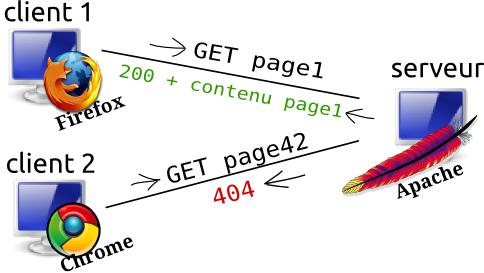

Vous avez appris le Python et aimeriez l’utiliser pour créer votre site web ? C’est possible ! Le langage Python est tout à fait adapté pour cela, et de nombreux frameworks peuvent vous simplifier la tâche. :) Je vous propose de découvrir l’un d’entre eux, Flask, qui a l'avantage d'être très simple à prendre en main.
Ce tutoriel est accessible aux débutants, mais demande tout de même quelques pré-requis :
connaître le langage Python (un tutoriel est disponible ici)
connaître les langages HTML et CSS (tutoriel ici). Si vous ne les connaissez pas, vous pouvez néanmoins suivre les 4 premiers chapitres du cours, par curiosité.
Voilà un petit exemple de ce que nous réaliserons durant ce cours :
Avant d’attaquer l’apprentissage de Flask, attardons-nous un peu sur de la théorie : le fonctionnement des sites Web. Cette partie a beau n’être que théorique, elle est néanmoins très importante pour comprendre la suite : ne la négligez pas ! En effet, c’est maintenant que nous allons découvrir des notions que nous utiliserons par la suite grâce à Flask. Ces notions vous seront donc toujours utiles, que vous utilisiez Flask ou autre chose.
Pour commencer, disons qu'un site web n'est qu'un simple programme exécuté sur un ordinateur. Quand vous vous rendez sur ce site web, vous êtes ce qu'on appellera un client, et l'ordinateur où est exécuté ce site web est appelé le serveur.
Quoi de plus simple qu’un beau schéma pour introduire le concept ? Voici donc un schéma représentant plusieurs clients se connectant à un serveur :
Vous noterez que j’ai représenté les clients de la même manière que le serveur : par un ordinateur. En effet, il faut bien comprendre que n’importe quelle machine peut faire office de client ou de serveur. Durant notre apprentissage, nous utiliserons le même ordinateur pour faire les deux : le site web sera donc situé sur votre propre machine. Quand notre site sera prêt, nous pourrons le placer sur un serveur accessible au monde entier. Patience ! :)
Qu’est-ce qui différencie un serveur d’un client dans ton schéma alors ?
Le client et le serveur communiquent ensemble. Je ne l’ai pas représentée, mais la seule différence, c’est le logiciel utilisé pour la communication entre le client et le serveur. En effet, le client et le serveur n’utilisent pas le même logiciel ! Le client utilise un simple navigateur web (ça, vous devriez connaitre). Quant au serveur, le logiciel qu’il utilise (et qui lui permet de communiquer avec tous les clients en même temps) s’appelle un serveur HTTP.
J’en profite pour compléter le schéma :
Tout comme il existe plusieurs navigateurs web, il existe plusieurs serveurs HTTP. Le plus connu d’entre tous est Apache, mais il en existe de nombreux autres : peut être avez vous entendu parler de nginx, lighttpd, cherokee. Les serveurs HTTP peuvent évidemment fournir des pages web à plusieurs clients à la fois, et ils peuvent même contenir plusieurs sites web différents.
Réintéressons nous à notre schéma : il est encore incomplet. En effet, on a compris que les clients communiquaient avec le serveur, mais on ne sait pas comment. Ils utilisent pour cela le protocole HTTP. Pour simplifier, on pourrait dire que le client demande une page web, et que le serveur la lui renvoie, mais soyons un peu plus précis.
La requête
Quand le client “demande une page web”, en réalité, il envoie au serveur une requête qui contient :
le chemin vers la page web demandée, évidemment
un type. Les deux principaux sont GET et POST. Le type de requête POST est utilisé quand on valide un formulaire sur une page web. Le reste du temps, le type est GET.
quelques informations (sur le type de navigateur notamment)
et éventuellement, des données. Par exemple quand le visiteur valide un formulaire, il envoie les données remplies dans la requête POST. Mais on peut également envoyer des données avec une requête GET.
La réponse
Lorsque le serveur lui répond, il renvoie bien évidemment la page demandée, mais pas seulement ! Il renvoie aussi le type de la page renvoyée, appelé le mimetype (généralement, ce mimetype indique que la page est une page normale, contenant du HTML. Mais parfois, on souhaite renvoyer autre chose : une image, un fichier .doc, un pdf...), et il renvoie également qu'un code d’erreur. Par exemple, quand la page demandée est introuvable, on a le fameux code d’erreur 404. Mais il en existe de nombreux autres :
L'erreur 500 désigne une erreur survenue sur le serveur (il faut espérer ne pas l’avoir, celle là ;) )
L'erreur 401 désigne que l'accès à cette page web n'est pas autorisé
L'erreur 400 signifie que la requête du client est mal formée (par exemple s'il n'envoie pas toutes les données d'un formulaire)
L'erreur 200 signifie que... tout s’est bien passé
Eh oui, quand tout se passe bien et que l’on renvoie la page au client, on précise quand même le code d’erreur.
On peut donc finaliser notre schéma :

Tout ça c’est bien beau, on sait comment client et serveur communiquent, mais dans tout ça, où est notre site web ?
Eh bien, pour y accéder, on utilisera un navigateur, peu importe lequel. Et pour exécuter notre site web, où plutôt, pour le propulser (oui j'aime bien ce terme ;) ), on utilisera un serveur HTTP. Il nous faudrait donc installer apache, par exemple. Mais en réalité, cela ne suffirait pas. Hé oui, je ne vous l’avais pas dit, mais les serveurs HTTP ne savent pas interpréter le Python ! Il nous faut donc ajouter à notre serveur HTTP un module pour rendre possible l’utilisation de Python, et donc de Flask. Je précise que ce problème est le même pour utiliser PHP ou Java : à chaque fois, il faut un module spécifique. Il y a plusieurs façons d’intégrer Python dans un serveur web. Pour faire court, sachez qu’il existe une norme appelée WSGI, que Flask respecte cette norme, et qu’il existe des modules pour les principaux serveurs HTTP leurs permettant de désservir des sites web en Python respectant la norme WSGI. Pour apache, il existe le module mod_wsgi. Une fois que tout est bien installé, il ne reste plus qu'à configurer le serveur pour qu'il déserve notre code Python.
Enfin, tout ça, c’était pour votre culture, parce que dans tout ce tutoriel, nous allons utiliser le serveur HTTP + WSGI pré-intégré à Flask ! Autrement dit, nous allons exécuter notre programme Python comme n'import quel autre programme, et automatiquement, le serveur HTTP + WSGI intégré sera lancé, propulsera votre site web, et vous pourrez y accéder immédiatement ! :)
Nous avons vu que notre navigateur web envoyait des requêtes HTTP aux serveurs HTTP. Intéressons nous au lien qu'il existe entre cette requête et l’adresse que nous entrons dans notre navigateur web pour accéder à une page web. Prenons l’exemple de cet adresse :
/forum-81-407-langage-python.html : ceci est le chemin de la page web demandée, aussi appelé "route". Il s'agit du même chemin que celui présent dans la requête HTTP !
Dans tout le tutoriel, le serveur HTTP sera notre propre ordinateur. Le nom de domaine de notre propre ordinateur est appelé localhost par convention. Pour accéder à la page appelée “/unepage”, nous devrons donc entrer dans notre navigateur : http://localhost/unepage Un dernier petit détail : un serveur HTTP peut fonctionner sur différent ports. Par défaut, le serveur HTTP intégré à Flask fonctionne sur le port 5000, il faut donc le préciser dans l’adresse du navigateur : http://localhost:5000/unepage
Mais d'habitude on n'indique jamais de numéro de port ?
Si on ne précise pas de numéro de port, le navigateur va aller automatiquement sur le port 80. Or, c'est sur le port 80 que fonctionnent la plupart des serveurs HTTP. Celui intégré à Flask ne fonctionne pas sur ce port car il s'agit d'un serveur HTTP destiné uniquement au développement de votre site web, il ne doit pas être utilisé quand celui-ci est terminé et diffusé sur Internet.
Voilà, vous devriez en savoir désormais assez pour passer au second chapitre... Mais vérifions tout cela dans notre premier QCM ! :)
J'espère que vous avez décroché un 20/20 au QCM car dans la suite, toutes ces notions devront être maîtrisées afin que vous puissiez utiliser Flask sans encombre. ;)
Après la découverte des notions nécessaires dans le chapitre précédent, nous allons enfin nous concentrer sur Flask. Ce chapitre à pour but d'en faire la présentation.
Flask, je l’ai dit, est un framework web, ou plutôt, un micro-framework. Ce “micro” signifie simplement que Flask ne fait pas tout. Cela signifie aussi que pour en faire plus que ce qu’il permet de base, il faudra installer des extensions. Heureusement, celles-ci sont nombreuses, de qualité, et très bien intégrées, je vous en présenterai d’ailleurs quelques unes en temps voulu.
Si vous ne savez pas ce qu’est un framework, dites vous simplement que Flask est un ensemble de modules qui vont vous faciliter la programmation de sites web dynamiques. Dans l’absolu, vous pourriez vous débrouiller sans framework ! En effet, il suffit que votre application suive la norme WSGI. Voilà un exemple d’une application extrêmement basique réalisée sans framework, simplement en respectant cette norme :
#!/usr/bin/env python
# -*- coding:utf-8 -*-
import re
from cgi import escape
def index(environ, start_response):
""" Page d'accueil accessible à '/'
Affiche simplement une phrase. """
start_response('200 OK', [('Content-Type', 'text/html')])
return ["Ceci est la page d'accueil."]
def hello(environ, start_response):
""" Page accessible à la route '/hello/'
Affiche la phrase que l'utilisateur a passée en paramètre. """
# recupère la phrase depuis l'url si elle a été spécifiée
# Sinon, affiche Hello World.
args = environ['myapp.url_args']
if args:
phrase = escape(args[0])
else:
phrase = 'Hello World'
start_response('200 OK', [('Content-Type', 'text/html')])
return [phrase]
def not_found(environ, start_response):
""" Appelée si l'adresse est inconnue. """
start_response('404 NOT FOUND', [('Content-Type', 'text/plain')])
return ['Not Found']
# associe les adresses aux fonctions
urls = [
(r'^$', index),
(r'hello/?$', hello),
(r'hello/(.+)$', hello)
]
def application(environ, start_response):
""" Dispatche les requêtes aux fonctions précédentes. """
path = environ.get('PATH_INFO', '').lstrip('/')
for regex, callback in urls:
match = re.search(regex, path)
if match is not None:
environ['myapp.url_args'] = match.groups()
return callback(environ, start_response)
return not_found(environ, start_response)
Comme vous le voyez, le code est long et complexe, et son organisation n’est pas évidente. Pourtant, tout cela représente finalement peu de choses : cela crée un site web qui dispose de deux pages :
la page d’accueil, dont le chemin (la route) est ‘/’, et qui se contente d’afficher un message prédéfini.
la page ‘/hello’, qui affiche “Hello World” si on ne lui précise rien, ou qui affiche ce qu’on lui passe en paramètre. Exemple :
‘/hello/coucou’ affichera “coucou”
‘/hello/Bienvenue sur mon site !’ affichera “Bienvenue sur mon site !”
Si la page demandée ne correspond à aucune route existante, on renvoie une erreur 404.
Vous voyez donc qu’écrire un site web sans framework peut se révéler extrêmement fastidieux... Je vous propose de voir comment on peut obtenir la même application avec Flask. Vous allez voir, c’est tout de suite beaucoup plus digeste ! :)
#!/usr/bin/env python
# -*- coding:utf-8 -*-
from flask import Flask
app = Flask(__name__)
@app.route('/')
def index():
return "Ceci est la page d'accueil."
@app.route('/hello/<phrase>')
def hello(phrase):
return phrase
Là le code est beaucoup plus court et plus lisible, on distingue bien nos deux pages, la page d’erreur est automatiquement générée, bref, il n’y a pas photo : c’est bien plus simple.
Tout ça c’est bien joli, mais qu’est-ce qu’on peut faire de réellement utile avec Flask ?
Comme je l’ai dit, vous pouvez réaliser des sites web dynamiques. Cela signifie que le contenu de votre site ne sera pas figé, par opposition aux sites statiques. Un site statique est suffisant pour, par exemple, faire la description d’un projet. Mais dès que l’on veut personnaliser la page en fonction du visiteur ou de ses actions, il faut faire un site dynamique. Un site dynamique permet la participation des visiteurs. Par exemple, les blogs, les forums, les réseaux sociaux, les chats, les webmails, sont des sites dynamiques.
Le petit exemple que l’on a vu, aussi inutile soit il, est bien un exemple de site dynamique ! En effet, la page située au chemin '/hello' affiche un message qui n’est pas figé, il dépend du visiteur. :)
À la fin de ce cours, vous serez donc en capacité de réaliser toutes sortes de sites dynamiques. Tout ce que vous avez à faire est de lire les chapitres dans l’ordre. Au passage, étant donné que Flask n’est qu’un module Python parmi d’autres, une fois que vous le connaîtrez, vous pourrez ajouter une interface web à vos programmes grâce à lui, ou bien interagir avec d’autres modules Python dans votre site web !
La concurrence
Avant de vous laisser face au QCM, je me dois de vous parler de la concurrence. En effet, Flask est loin d’être le seul framework web en Python. Il en existe de nombreux : Django, Pyramid, Pylons, Tornado, Bottle, Cherrypy, Web2Py, Web.py, et beaucoup d’autres.
Pourquoi donc choisiriez vous Flask ? Je n’ai pas de réponse toute faite, cela dépend évidemment des goûts de chacun. Ce qui est certain, c’est que Flask, contrairement à Django (qui est un très gros framework), ne réinvente pas la roue : il utilise d’autres modules existants en tant qu’extensions, ce qui pourra vous être utile si jamais vous désiriez un jour utiliser ces modules en dehors de Flask. Flask est également beaucoup plus simple que Django à appréhender, comme vous avez pu le voir avec l’exemple de code donné précédemment, tenant en quelques lignes d’un fichier.
Ce court chapitre d’introduction est terminé, j’espère qu’il vous donnera envie d’apprendre à utiliser Flask :) . Si c’est le cas, direction le chapitre suivant, où on attaque les choses sérieuses : installation de Flask et réalisation d’un premier site web ! :pirate:
Dans ce chapitre, les choses sérieuses commencent, puisqu’on va installer Flask, créer un premier site (simplifié à l’extrême), et comprendre son fonctionnement.
Nous allons installer Flask à l’aide de la commande pip, qui simplifie beaucoup de choses. En plus de cela il nous faut bien évidemment Python (version 2.7, Flask ne supporte pas encore Python 3, mais ne vous inquiétez pas, vous ne constaterez aucune différence).
Sous Linux
L'installation de paquets est toujours aussi simple (exemple avec ubuntu):
Python 2.7 est téléchargeable sur le site officiel (choisissez Python 2.7.3 Windows Installer, la version 32 bits). Installez le si ce n'est pas déjà fait. Puis, téléchargez ce fichier (il s'agit d'un bête script Python) et exécutez le (par un double clic). Une console devrait s'ouvrir, afficher quelques messages, télécharger un fichier, et se refermer. Parfait, vous venez d'installer easy_install, qui est l'ancêtre de pip. Ensuite il faut ajouter easy_install à la variable PATH pour que Windows sache où trouver ce programme.
Menu Démarrer
Clic droit sur Ordinateur ⇒ Propriétés
Dans la nouvelle fenêtre, clic sur Paramètres Systèmes avancés(sous Windows XP, clic sur l’onglet avancé à la place)
Clic sur “variables d’environnements”
Dans la section “Variables systèmes”, double clic sur “Path”
Ajoutez ;C:\Python27\Scripts à la fin de cette ligne (vérifiez quand même que le dossier C:\Python27\Scripts existe)
Puis, lancez une invite de commande (cmd) et entrez les commandes suivantes :
easy_install pip
pip install flask
Sous Mac OS X
Python 2.7 est téléchargeable ici. Puis, exécutez ces commandes dans une console :
Vous disposez maintenant du module Flask. Il est temps de créer notre premier projet ! Créez donc un dossier où nous pourrons placer tout le nécessaire. Certes, dans un premier temps, il n’y aura qu’un seul fichier dans ce dossier, mais c’est une bonne habitude à prendre pour la suite !
Dans ce dossier, créez un fichier nommé hello.py qui contiendra ce code :
Puis exécutez ce code (à l’aide d’un simple python hello.py en console), ouvrez votre navigateur web, et rendez vous à l’adresse http://localhost:5000. Et là, sous vos yeux ébahis, un magnifique “Hello !” devrait apparaître : félicitations, votre tout premier site web est terminé ! :)
Un peu d’explications
Ligne 4, on importe la classe Flask depuis le module flask, et on s’en sert ligne 5 pour instancier l’objet app. Cet objet est fondamental : il s’agit de notre application, ou de notre site web, si vous préférez. En termes techniques, il s’agit d’une application WSGI... vous vous souvenez, la chose horrible dans le chapitre précédent. Eh bien l’objet app contient toutes ces choses horribles et nous dispense de nous en charger. :D Lors de l’instanciation de app, vous noterez qu’on lui passe en paramètre __name__ (qui vaut '__main__' dans ce cas). Ce paramètre est utile lorsque l’on a plusieurs applications WSGI, mais dans notre cas ce n’est qu’un détail, on ne s’en souciera pas.
Voyons maintenant la fin du code : ligne 12, on lance notre application en mode debug, qui nous aidera à détecter les erreurs dans notre code. Le mode debug nous offre un second avantage : essayer de modifier ce fichier (par exemple, faites afficher “Coucou” au lieu de “Hello !”), sauvegardez le, et actualisez la page dans votre navigateur web : le site a été mis à jour sans besoin de relancer le programme avec python hello.py. Le mode debug est donc bien pratique pour développer, mais à ne surtout par laisser quand votre site sera disponible sur Internet.
Une autre manière d'activer le mode debug aurait été d'écrire (juste après la ligne 5 par exemple) :
app.debug = True
Cela revient au même : l'objet app est configurable. On peut par exemple lui configurer sa clé secrète (qui sera indispensable pour sécuriser les sessions des visiteurs, mais nous n'en sommes pas encore là). Il suffit de faire :
app.secret_key = '2d9-E2.)f&é,A$p@fpa+zSU03êû9_'
Faites cela de votre côté et gardez votre clé bien secrète.
Revenons à la ligne 12 de notre code. Lorsque l'on appelle la méthode run() de app, le serveur HTTP + WSGI de Flask est automatiquement lancé.
Mais le coeur du code, c’est la fonction index, c’est elle qui se charge de renvoyer “Hello !”. Vous remarquerez qu’on a décoré cette fonction avec le décorateur @app.route qui prend en paramètre une route. Cette route est celle par laquelle notre fonction sera accessible. La route ‘/’ est spéciale puisqu’elle représente la racine du site web. Il n’est donc pas besoin de la préciser dans l'adresse du navigateur. Comme ce concept est important, voici quelques exemples :
si l'adresse est siteduzero.com → la route est /
siteduzero.com/ → /
siteduzero.com/forum/ → /forum/
siteduzero.com/forum/python → /forum/python
Jouons un peu avec ce code
Faisons quelques tests pour voir si les routes fonctionnent comme on s’y attend : créons de nouvelles pages ! Créons une page ‘/contact’ qui affiche quelques informations pour nous contacter (mail, téléphone) :
Ajoutez ce code à votre fichier, sauvegardez, et rendez vous à l'adresse http://localhost:5000/contact. Tout fonctionne bien. Maintenant, essayer de vous rendre à l'adresse http://localhost:5000/contact/ (la même qu'auparavant, mais avec un slash à la fin !). On obtient une erreur 404. :colere2: Cela est normal car la route vers la fonction contact est '/contact', sans slash à la fin. Si on rajoute un slash à la fin de cette route, cela fonctionnera. Essayez, remplacez @app.route('/contact') par @app.route('/contact/'). Vous pouvez constater que si vous mettez le slash à la fin de l'adresse, cela fonctionne, et même mieux, si vous oubliez d'entrer le slash, il est automatiquement rajouté, plus d'erreur 404 !
Le debugger en action
Profitons de la vuecontact pour tester le debugger. Introduisons une erreur dans ce code. Par exemple, comme cela :
La variable mail est désormais inconnue. Regardons ce qui se passe si l'on tente de se rendre à la page '/contact/' :
Cette page d'erreur est généré par le debugger intégré à Flask (que l'on a activé grâce à debug=True, je vous rappelle). J'ai indiqué par 3 symboles rouges les détails importants :
En haut à gauche, la description de l'erreur
En bas à droite, une icone noire pour activer le terminal
Une fois le terminal activé, en bas à gauche, vous pouvez saisir des commandes python qui seront exécutées à l'endroit du code choisi !
Une petite question pour voir ceux qui suivent : à votre avis, que se serait-il passé si on n'avait pas activé le debugger ? On aurait eu une erreur 500 :euh:
J'espère que vos souvenirs du premier chapitre sur le Web sont encore frais ! En effet dans cette partie nous allons voir comment Flask, à sa manière, manipule les requêtes et les réponses HTTP. Si vous avez déjà oublié qu'une requête HTTP est envoyée par le navigateur au serveur HTTP, ou ce que sont les types GET et POST, ou qu'une réponse possède toujours un code d'erreur, je vous invite à relire avec attention le premier chapitre de ce cours ! ;)
Vous remarquerez que la seule nouveauté est l'import de request. Cet objet va représenter la requête HTTP envoyée par le client et reçue par le serveur. Par conséquent, tout ce qui est contenu dans la requête HTTP se retrouve dans cet objet. Nous y trouverons donc le chemin de la page demandée, le type de la requête, quelques informations supplémentaires à propos du client, ainsi que les données transmises.
Le chemin de la page demandée
Le chemin de la page demandé est accessible via l'attribut path de l'objet request. Voilà un petit exemple d'utilisation :
@app.route('/')
def racine():
return "Le chemin de 'racine' est : " + request.path
@app.route('/la')
def ici():
return "Le chemin de 'ici' est : " + request.path
Accéder au contenu de la requête est aussi simple que cela. Mais l'attribut path ne présente pas tellement d'intérêt. Voyons donc un autre exemple avec une utilité concrète : le type de la requête HTTP.
Filtrage des méthodes HTTP
Ce fameux "type" est plus connu sous le nom de "méthode HTTP". Je vous ai dit que les méthodes HTTP les plus répandues étaient GET et POST : c'est vrai, car les formulaires des pages web ne peuvent envoyer que ce type de requête dans les normes HTML 4 et XHTML 1. Cela devrait changer avec l'avènement de HTML 5. De plus, les autres méthodes HTTP sont disponibles grâce à d'autres outils (pour ceux qui connaissent : via XMLHttpRequest en Javascript, ou via la commande curl, etc.).
La méthode POST est généralement employée lorsque le visiteur valide un formulaire (et envoie donc ses données au serveur dans le requête). Le reste du temps, la méthode employée est GET. Imaginons une situation où nous avons une page accessible au chemin '/contact'. Nous voudrions que cette page affiche un formulaire de contact, que le visiteur remplisse le formulaire, le valide, et qu'un remerciement lui soit affiché à la suite de cela. Tout cela, dans une seule et même page, '/contact'.
Une solution à ce genre de problème courant est de regarder la méthode HTTP utilisée : si le visiteur vient simplement d'arriver sur la page (en cliquant sur un lien ou en tapant directement l'url dans son navigateur), la méthode employée sera GET. En revanche, s'il vient de valider le formulaire, la méthode sera POST. Voyons la mise en œuvre de cet exemple :
@app.route('/contact', methods=['GET', 'POST'])
def contact():
if request.method == 'GET':
# afficher le formulaire
else:
# traiter les données reçues
# afficher : "Merci de m'avoir laissé un message !"
On note deux nouveautés dans ce code. La première : la méthode employée est accessible via l'attribut method de l'objet request. La seconde : on a précisé les méthodes autorisées dans le @app.route. Sans cela, la seule méthode autorisée est GET. On aurait pu écrire ce code différemment, en faisant une vue pour la méthode GET et une autre pour la méthode POST :
@app.route('/contact', methods=['GET'])
def contact_formulaire():
# afficher le formulaire
@app.route('/contact', methods=['POST'])
def contact_traiter_donnees():
# traiter les données reçues
# afficher : "Merci de m'avoir laissé un message !"
Pour découvrir l'erreur HTTP 405, regardez ce qui se passe si on supprime la méthode POST des méthodes autorisées. ^^
Les Routes
Nous avons vu que la route (c'est à dire le chemin de la page demandée) était accessible dans request.path. En pratique, ce n'est pas très utile, puisque Flask se débrouille tout seul comme un chef pour exécuter la bonne vue selon l'url demandée, tout cela grâce à @app.route. Nous avons vu que celui ci permet de spécifier une URL d'accès à une vue, en filtrant les méthodes HTTP autorisées. Mais @app.route nous réserve d'autres possibilités.
Une vue, plusieurs routes
Eh oui, on peut décorer plusieurs fois une vue avec @app.route afin de rendre accessible cette page par plusieurs adresses. Exemple :
@app.route('/f_python')
@app.route('/forum/python')
@app.route('/truc')
def forum_python():
return 'contenu forum python'
Cependant, ce n'est pas une très bonne chose d'utiliser cette possibilité comme je le fais dans cet exemple. En effet, les moteurs de recherche qui veulent indexer votre site web pour le référencer vont croire qu'il s'agit de 3 pages différentes, et on risque donc de retrouver ces 3 résultats en cherchant cette page dans Google, par exemple. En fait, cette possibilité est utile quand elle est combinée aux routes personnalisées.
Les routes personnalisées
Voilà une fonctionnalité qui se révèlera extrêmement utile pour le développement de votre site web ! :) Prenons à nouveau un exemple concret. Vous voulez mettre en place une page de discussion sur votre site, où les utilisateurs peuvent poster des messages et lire ceux des autres. Les messages seraient triés dans l'ordre décroissant afin de voir les plus récents en premier. Problème : au bout de quelques temps vous vous rendez compte qu'il y a trop de messages à afficher ! Vous décidez de limiter le nombre de messages par page à 50, et vous ajoutez des boutons "page suivante" et "page précédente" pour naviguer dedans. Comment faire ?
Voici un résultat élégant que nous aimerions obtenir :
La page '/discussion' affiche les 50 messages les plus récents.
La page '/discussion/page/3' affiche la 3ème page de messages, c'est à dire de 101 à 150.
Du coup, la page '/discussion/page/1' affiche la même chose que la page '/discussion'.
Les routes personnalisées sont un moyen d'obtenir de telles url. Nous aurions quelque chose de ce genre là :
Ce qu'on a fait ici, c'est rajouter un paramètre obligatoire dans la route : un numéro de page à préciser, afin de pouvoir calculer les messages à afficher. Pour cela, il y a deux choses à faire :
Placer dans la route un nom de variable écrit entre les symboles '<' et '>'
Ajouter en paramètre à la vue décorée une variable possédant ce même nom
En procédant ainsi, on obtient alors une variable num_page qui correspond à ce qui a été mis à cet endroit dans l'url. Cette variable est une string, or nous voudrions un int, c'est pour cela que nous effectuons une conversion ligne 3. Mais cela crée une erreur si l'utilisateur entre autre chose qu'un nombre... Heureusement, Flask nous propose une meilleure façon de faire :
Magique ! :magicien: En rajoutant ce petit 'int:' avant le nom de la variable, les seules valeurs acceptées seront des entiers (sinon il y aura une erreur 404), et la variable sera automatiquement convertie. Plus d'erreur 500 !
Maintenant, il nous reste un dernier problème : pouvoir accéder aux 50 messages les plus récents en nous rendant à l'adrese '/discussion'. Si on essaye de rajouter une route, bêtement :
@app.route('/discussion')
On obtient une erreur, puisqu'il manque une valeur pour num_page... La solution est d'utiliser une valeur par défaut pour le paramètre num_page de notre vue mon_chat :
Bien entendu, vous pouvez mettre plusieurs variables dans vos routes, et vous n'êtes pas obligés de les séparer par un slash. Par exemple, voici une page qui qui affiche le prénom et le nom passés dans l'adresse :
@app.route('/afficher')
@app.route('/afficher/mon_nom_est_<nom>_et_mon_prenom_<prenom>')
def afficher(nom=None, prenom=None):
if nom is None or prenom is None:
return "Entrez votre nom et votre prénom comme il le faut dans l'url"
return "Vous vous appelez {} {} !".format(prenom, nom)
Un bon exemple d'utilisation des routes personnalisées est la fonctionnalité de facebook qui permet d'avoir une belle url pour accéder à son profil : si vous vous appelez Luc Dupont, votre profil peut être accessible à la route '/luc.dupont'. Ce genre de choses se met en place facilement grâce aux routes personnalisées ('/<prenom>.<nom>').
Jusqu'ici, toutes nos pages se contentaient de renvoyer une chaîne de caractère. Flask transformait tout seul cette chaîne en une réponse HTTP, et lui attribuait le mimetype "text/html" (ce qui signifie que le contenu de la page est du HTML) et le code d'erreur 200 (qui signifie que tout s'est bien passé). Voyons maintenant comment modifier ce comportement. ;)
Changer le mimetype
Essayons de concevoir une page web qui génère une image et qui la renvoie telle quelle. J'utiliserai pour cela le module PIL (Python Image Library) que vous pouvez installer via la commande pip install PIL.
from PIL import Image
from StringIO import StringIO
@app.route('/image')
def genere_image():
mon_image = StringIO()
Image.new("RGB", (300,300), "#92C41D").save(mon_image, 'BMP')
return mon_image.getvalue()
Quelques explications : ligne 6 je crée l'objet qui va contenir l'image (un StringIO est en quelques sortes un fichier stocké dans la RAM et non sur le disque dur), ligne 7 je génère une image de dimensions 300 sur 300, de couleur verte ('#92C41D'), au format BMP, et je la stocke dans l'objet mon_image. Puis, ligne 8, je renvoie le contenu de l'objet mon_image... c'est à dire l'image elle même.
En se rendant à l'adresse '/image' on s'attend donc à voir apparaître notre carré vert... Mais non, on obtient du texte incompréhensible ! :waw: (regardez le code source de la page si ce texte n'apparaît pas, en faisant Ctrl-U)
Le problème est que Flask nous renvoie bien l'image mais en oubliant de préciser qu'il s'agit d'une image, justement, et au format BMP : Flask fait croire à notre navigateur qu'il s'agit d'une page HTML comme une autre, c'est pour cela que notre navigateur s'acharne à l'afficher sous forme de texte.
La solution est simplement de dire à Flask que le mimetype de cette réponse HTTP n'est pas 'text/html' comme d'habitude, mais 'image/bmp'.
Mais, où est-ce qu'on fait ça ? On doit faire un from flask import reponse pour pouvoir manipuler la réponse HTTP ?
Presque ! Cette fois ci, c'est légèrement différent, on va créer la réponse à partir de l'image, puis on va changer son mimetype en manipulant l'objet réponse. Mais pour le créer, nous allons effectivement avoir besoin d'un import :
from flask import make_response
Ensuite, on peut enfin créer un objet réponse HTTP à partir de l'image, changer son mimetype (qui est simplement un attribut de la réponse), et renvoyer la réponse :
reponse = make_response(mon_image.getvalue())
reponse.mimetype = "image/bmp" # à la place de "text/html"
return reponse
Dans le même registre, on peut éventuellement avoir besoin de changer le code d'erreur HTTP d'une page. Imaginons la page suivante (parfaitement inutile, mais c'est pour l'exemple) :
@app.route('/404')
def page_non_trouvee():
return "Cette page devrait vous avoir renvoyé une erreur 404"
Si on consulte cette page dans notre navigateur, le texte s'affiche bien. Mais a-t-on reçu un code d'erreur 404 ? Non, nous n'avons rien fait pour cela, nous avons donc obtenu le code d'erreur 200. Pour forcer un code d'erreur différent, il faut créer un objet réponse et modifier son attribut status_code :
@app.route('/404')
def page_non_trouvee():
reponse = make_response("Cette page devrait vous avoir renvoyé une erreur 404")
reponse.status_code = 404
return reponse
Et voilà ! :magicien: Petite astuce : dans le cas particulier du code d'erreur, on peut le spécifier directement à l'intérieur du make_response() :
@app.route('/404')
def page_non_trouvee():
reponse = make_response("Cette page devrait vous avoir renvoyé une erreur 404", 404)
return reponse
Et même mieux : je vous ai dit que Flask appliquait tout seul make_response() à nos return quand on ne l'avait pas fait, on peut donc écrire tout simplement ceci :
@app.route('/404')
def page_non_trouvee():
return "Cette page devrait vous avoir renvoyé une erreur 404", 404
On renvoie en fait un tuple dont la deuxième valeur est le code d'erreur HTTP. Plus besoin de make_response() !
Personnaliser ses pages d'erreur
Ce que nous venons de faire est en quelque sorte de créer une page d'erreur personnalisée, mais cela ne présente pas beaucoup d'intérêt, car dans le cas général, le visiteur entre une adresse inconnue, et Flask lui renvoie une page d'erreur 404 assez austère. Ce qui serait intéressant serait justement de modifier cette page 404 affichée par défaut... Heureusement Flask nous permet de mettre cela en place très facilement pour n'importe quel code d'erreur, grâce au décorateur @app.errorhandler ! :)
Ce décorateur est comparable à @app.route. La différence est que @app.route associe une vue à la route présente dans la requête, tandis que @app.errorhandler associe une vue à une erreur survenue sur le serveur. Voilà comment il s'utilise :
@app.errorhandler(404)
def ma_page_404(error):
return "Ma jolie page 404", 404
Je ne me suis pas servi du paramètre error de ma vue, car celui-ci contient des informations sur le type d'erreur survenue, or, dans ce cas là, il s'agit forcément de l'erreur 404. Mais ce paramètre est utile si on fait une seule vur pour plusieurs codes d'erreur :
Nous avons vu comment modifier le code d'erreur pour une réponse donnée, mais imaginons que nous voulions carrément qu'une page (qui existe bien) se comporte comme si elle n'existe pas ? Il faudrait en quelques sortes "rediriger" vers la page 404. Ce comportement est exactement celui permis par la fonction abort.
Prenons un exemple concret : si l'utilisateur n'est pas identifié, la page '/profil' affiche une page d'erreur 401 (qui signifie "accès non autorisé") :
from flask import abort
@app.route('/profil')
def profil():
if utilisateur_non_identifie:
abort(401)
return "Vous êtes bien identifié, voici la page demandée : ..."
Ce petit système de redirection spécifique aux erreurs est bien pratique... Et il existe le même système de redirection pour les pages normale, ce que nous allons voir immédiatement.
Les redirections
Nous préférerions que la page '/profil' redirige vers la page '/login' si l'utilisateur n'est pas identifié. Voyons comment faire.
Un peu de théorie : le code d'erreur HTTP 302
Commençons par un petit détail technique : lorsqu'on veut rediriger le visiteur vers une autre page, on lui envoie un code d'erreur HTTP 302 accompagné de l'adresse de la page où il doit se rendre. Le navigateur charge alors cette page automatiquement, c'est pour cela qu'on ne voit jamais de page d'erreur 302 apparaître, tout s'enchaîne rapidement.
La fonction redirect
Elle s'utilise un peu à la manière de abort, sauf qu'au lieu de prendre en paramètre un code d'erreur, elle prend une route. De plus, il faut retourner ce que renvoie redirect. Exemple :
Et si nous revenons à notre problème initial, nous pouvons maintenant le résoudre en faisant ainsi :
from flask import redirect
@app.route('/profil')
def profil():
if utilisateur_non_identifie:
return redirect('/login')
return "Vous êtes bien identifié, voici la page demandée : ..."
@app.route('/login')
def page_de_login():
# ...
Tout semble aller pour le mieux... sauf qu'il ne faut surtout pas procéder ainsi. En effet, on vient de faire quelque chose de mal : on a indiqué une route en paramètre de redirect(). Souvenez vous, les routes sont faites pour être écrites une seule fois, dans le @app.route. De cette façon, si on veut changer les routes, cela se fera à un seul endroit, tandis que si on écrit également les routes dans les redirect(), il faudra les changer partout !
La bonne méthode est d'utiliser non pas la route, qui peut changer, mais le nom de la vue ciblée, qui restera inchangé, même si on modifie sa ou ses routes d'accès. En l'occurence, le nom de la vue est page_de_login.
La problème est que si l'on passe le nom de cette vue à redirect, celui ci ne va pas savoir quoi en faire, car il ne peut recevoir qu'une adresse. Il faut donc utiliser une autre fonction (encore une !), très pratique, appelée url_for(). Elle va transformer le nom de vue que vous lui passerez (sous la forme d'une chaîne) en une adresse, exploitable par redirect.
La fonction url_for
Je n'ai plus grand chose à rajouter, voilà simplement le code final que nous voulions :
from flask import redirect, url_for
@app.route('/profil')
def profil():
if utilisateur_non_identifie:
return redirect(url_for('page_de_login'))
return "Vous êtes bien identifié, voici la page demandée : ..."
@app.route('/login')
def page_de_login():
# ...
Un dernier détail cependant : url_for peut aussi générer des routes personnalisées, il suffit de lui passer en paramètres les variables nécessaires dans la route.
Par exemple, si notre page '/profil' est en réalité accessible uniquement avec un pseudo de la façon suivante :
Alors pour générer l'adresse vers le profil du membre "Luc1664", on utilisera url_for de la manière suivante :
url_for('afficher_profil', pseudo="Luc1664")
Tout simplement ! :)
Et maintenant, vérifions votre attention avec le traditionnel QCM ! :diable:
Ce chapitre a été long (n'hésitez pas à le relire et à vous entraîner), et pourtant je n'ai pas tout dit ! Il nous reste quelques petits mystères à propos des objets requêtes et réponses à découvrir, mais le plus gros du travail a été fait, félicitations ! En guise de récompense, dans le prochain chapitre, on va enfin apprendre à afficher des belles pages pleines de HTML5, de CSS3 et de Javascript. :)
Je vous avais prévenu à la fin du chapitre précédent : nous allons maintenant, enfin, produire de belles pages contenant du HTML5/CSS3 (qu'il vous faudra impérativement connaître pour la suite) ! Pour effectuer cela de la manière la plus efficace et élégante possible, Flask intègre ce qu'on appelle un moteur de templates. Voyons comment il s'utilise ! :pirate:
Un moteur de templates ? Je n'ai pas besoin de ça pour afficher du HTML moi...
Si vous vous dites cela, c'est peut être que vous avez une idée derrière la tête ! En effet, jusque là, je n'ai fait renvoyer que des chaînes de caractères par nos pages web. Certains d'entre vous se sont sûrement essayés à insérer du HTML dans ces chaînes... et ont pu constater que cela fonctionnait parfaitement :
Ce code est immonde, et pourtant ma page est encore bien simple. Imaginez que vous ayez 50 pages : vous rendez vous compte de la taille de votre fichier ? Du nombre de répétitions que vous faites ? Du nombre de lignes de codes à changer à chaque fois que vous voudrez modifier la page ?
Une solution serait de coder quelque chose qui évite toute cette répétition, qui nous permette d'insérer intelligemment et élégamment le contenu de nos variables dans des pages HTML... et c'est exactement ce à quoi sert un moteur de templates.
La même page, en utilisant un template
Sans plus attendre, voici à quoi ressemblerait le code précédent en l'adaptant au moteur de template intégré à Flask. Nous aurions deux fichier :
Le fichier Python hello.py qui contient notre vue accueil().
Le fichier template, que nous appellerons par exemple accueil.html.
<!DOCTYPE html>
<html>
<head>
<meta charset="utf-8" />
<title>{{ titre }}</title>
</head>
<body>
<h1>{{ titre }}</h1>
<ul>
{% for mot in mots %}
<li>{{ mot }}</li>
{% endfor %}
</ul>
</body>
</html>
Comme vous le voyez, on déporte tout ce qui concerne simplement l'affichage et la mise en forme dans le fichier template. J'expliquerais plus loin en détail comment tout cela fonctionne.
Intégrer les fichiers CSS et Javascript
Nous voudrions ajouter notre beau style CSS, appelé mon_style.css, à cette page toute morne. Question : quel chemin écrire dans l'attribut href de l'élément HTML <link> ?
Piège ! :ninja: Rappelez-vous : on n'écrit pas les chemins en dur, on utilise url_for() ! Eh oui, cette fonction est utilisable à l'intérieur des templates. :)
Maintenant, l'autre question est de savoir où placer notre fichier mon_style.css, et comment faire comprendre à url_for() qu'on veut l'adresse de ce fichier et pas d'une vue comme auparavant... C'est en fait tout simple. Les fichiers CSS, Javascript, tout comme les images, c'est à dire tous les fichiers statiques, vont être placés dans un dossier appelé static justement. Puis on utilisera url_for() de la manière suivante :
url_for('static', filename='mon_style.css')
Notre balise <link> ressemblera donc à cela au final :
Pour l'instant, nous avons un seul fichier Python, mais à termes nous en aurons plusieurs. Afin de faire de notre projet un package Python, j'ai l'habitude de renommer application.py en __init__.py.
Ne vous laissez pas intriguer par le titre "côté utilisateur", vous ne le comprendrez qu'une fois que vous aurez vu l'autre côté, celui "programmeur", dans la partie suivante. ^^
Passer du contenu au template
Les templates sont des fichiers HTML dans lesquels on place des sections de code Jinja2, qui ressemble fortement à du Python. L'exemple le plus simple que l'on puisse imaginer serait un template ne contenant que du HTML :
<!DOCTYPE html>
<html>
<head>
<meta charset="utf-8" />
<title>Accueil</title>
</head>
<body>
<h1>Ceci est la page d'accueil.</h1>
</body>
</html>
Pour faire afficher ce template par notre vue accueil(), Flask nous met à disposition la fonction render_template(), à laquelle on va passer en paramètres le nom du fichier template (par exemple, pour être cohérent, accueil.html en l'occurence). Les fichiers templates doivent être placés dans le dossier nommé templates.
from flask import render_template
@app.route('/')
def accueil():
return render_template('accueil.html')
Si l'on veut passer au template des variables à afficher, cela se fait également dans la fonction render_template(). Il suffit de lui passer ces variables en tant qu'argument optionnels. Par exemple, si on désire afficher la date actuelle dans la page web, on fera ainsi :
from datetime import date
@app.route('/date')
def date():
d = date.today().isoformat()
return render_template('accueil.html', la_date=d)
On passe au template une variable qui s'appellera la_date. Cette variable sera une simple chaîne qu'on affichera ainsi :
<!DOCTYPE html>
<html>
<head>
<meta charset="utf-8" />
<title>Date</title>
</head>
<body>
<h1>La date d'aujourd'hui est : {{ la_date }}</h1>
</body>
</html>
Comme vous le voyez, pour afficher quelque chose dans un template, il suffit de mettre ce quelque chose entre '{{' et '}}'.
Il existe deux autres façons de faire en sorte de passer des variables depuis le code Python vers le template.
1) @app.context_processor
Si vous vous rendez compte que dans chaque vue, vous passez une variable qui est utilisée dans chaque template, il existe une manière de supprimer cette répétition. Par exemple, si vous utilisez la variable titre dans chaque template, voilà comment vous pourriez faire pour la passer à un seul endroit :
Comme vous le voyez, il suffit de créer une autre fonction décorée par @app.context_processor. Cette fonction doit renvoyer un dictionnaire où chaque clé sera une variable accessible dans les templates Jinja.
2) Sans rien faire
Certaines variables sont accessibles par défaut dans les templates, sans que vous ayez à faire quoi que ce soit. C'est le cas des variables request, config, session et g.
L'objet request, vous le connaissez. On peut par exemple afficher la valeur de son attribut method :
{{ request.method }}
Pour ce qui est des autres objets :
config représente la configuration de Flask. Nous n'y avons pas trop touché, excepté lorsque nous avons précisé debug=True. debug est en fait un item du dictionnaire config. Il en est de même pour secret_key.
session représente la session de l'utilisateur. Nous découvrirons les sessions dans le chapitre suivant.
g est un objet un peu fourre-tout où vous pouvez placer ce que bon vous semble en lui ajoutant des attributs : par exemple g.titre = "Bienvenue !"
Afficher le contenu des variables
On a déjà vu comment faire ça juste avant : il faut se servir de '{{' et '}}'. On a également vu (avec l'exemple de l'objet request) que l'on pouvait accéder aux attributs des objets, comme en Python, en plaçant un point entre le nom de l'objet et le nom de l'attribut : {{ obj.attr }}. Cette notation, s'il n'y a pas d'attribut attr, va aller chercher s'il existe un item 'attr' contenu dans obj.
Inversement, si on écrit {{ obj['attr'] }}, cela va d'abord chercher si un item attr est contenu dans obj, puis, s'il n'y en a pas, si obj possède un attribut nommé attr.
Ce fonctionnement est le même pour les objets, les listes et les dictionnaires ! :)
Et s'il n'y a ni item ni attribut, tout ça plante ?
Non : cela renverra la valeur spéciale undefined, et cela n'affichera rien.
Créer des variables dans les templates
On n'est pas obligé de se contenter des variables passées depuis l'extérieur dans nos templates. On peut très bien créer nos propres variables ! Les entiers, float, les chaînes, les listes, tuples et dictionnaires sont disponibles. Les opérations mathématiques de base également (+, -, *, /, %, **). La syntaxe pour créer une variable est la même qu'en Python, mais précédée du mot clé set :
{% set menu = ['accueil', 'news', 'contact'] %}
En faisant cela, on crée une variable appelée menu, qui est une liste. Cette variable sera accessible dans tout le reste du template. Si l'on désire que cette variable soit accessible seulement dans une certaine zone du template, alors on doit la créer dans un tagwith :
{% with menu = ['accueil', 'news', 'contact'] %}
{{ menu[0] }}
{{ menu[1] }}
{{ menu[2] }}
{% endwith %}
De cette manière, menu est inacessible en dehors des with / endwith.
Les filtres
Jinja introduit une syntaxe particulièrement élégante (à mon goût) pour appliquer une fonction sur une variable : les filtres. De nombreux filtres sont déjà prédéfinis. Les filtres s'utilisent ainsi (dans mon exemple, j'applique un filtre à une variable appelée x :
{{ x|filtre }}
{# ou, si le filtre utilisé dispose de paramètres : #}
{{ x|filtre('parametre') }}
En fin de compte, l'application de filtres utilise la même syntaxe que l'appel d'une méthode, sauf que l'on remplace le symbole '.' par '|' (ce symbole est accessible en faisant AltGr+6 (Shift+Alt+L sous Mac). Et sauf que les filtres ne sont pas des méthodes propres à une classe, ce sont simplement des fonctions.
Il existe beaucoup de filtres disponibles dans Jinja, certains sont là uniquement pour la mise en forme, d'autres non. La liste de tous ces filtres est disponible dans la documentation de Jinja. Voici néanmoins quelques exemples :
capitalize : ce filtre met en majuscule la première lettre d'une chaîne et en minuscule la suite. Pas de paramètres. Exemple : {{ titre|capitalize }}
join : concatène les valeurs d'une liste en les séparant par le délimiteur passé en paramètre (qui vaut par défaut ''). Cela fonctionne comme la méthode join de str. Exemple : {{ ["Salut", "Les", "Zéros"] | join(', ') }}
Nous en verrons quelques autres dans la suite de ce chapitre.
Les conditions
Les conditions se font de la même manière qu'en Python : if / elif / else. Et comme il ne s'agit pas d'un affichage, on utilise les balises '{% %}' et non '{{ }}'. Cependant, Python se base sur l'indentation, alors que Jinja non (vous pouvez placer vos balises comme vous le souhaitez, l'indentation ne compte pas). Par conséquent, il faut préciser la fin du bloc if / elif / else grâce à un mot clé spécial, endif.
Voilà un exemple simple d'utilisation des conditions :
<p>
{% if age < 18 %}
Halte là ! Accès non autorisé aux mineurs.
{% elif age < 90 %}
Accès autorisé. Enjoy !
{% else %}
Allez-y doucement.
{% endif %}
</p>
Maintenant voilà un autre exemple réutilisant ce qu'on a découvert juste auparavant (la déclaration de variables et les filtres) :
{% set age = "20" %}
{% if age|int == 20 %}
<p>Vous avez 20 ans tout pile, vous bénéficiez d'une remise exceptionnelle !</p>
{% endif %}
On utilise là le filtre int qui convertit une valeur en entier.
Dans les conditions, vous pouvez utiliser les opérateurs habituels : ==, !=, <, >, <=, >=, is, and, or, not, in.
Les tests intégrés à Jinja2
Les tests sont des fonctions disponibles dans Jinja et qui s'utilisent dans les conditions grâce au mot clé is. Tout comme les filtres, il existe des tests qui ne prennent pas de paramètres, et d'autre qui en nécessitent. La liste de tous ces tests est disponible dans la documentation de Jinja. Voici deux exemples, avec les tests defined et divisibleby :
{% if truc is defined %}
<p>La variable truc n'est pas undefined.</p>
{% endif %}
{% set age = 20 %}
{% if age is divisibleby(10) %}
<p>Votre âge est un multiple de 10.</p>
{% endif %}
Les boucles
Pour les boucles, il n'y a pas non plus beaucoup de nouveautés par rapport aux boucles en Python. On a même déjà vu un exemple de boucle for dans l'introduction. Cependant, il n'y a pas de boucles while dans Jinja. Et, comme l'indentation ne compte pas ici non plus, il faut terminer le bloc de la boucle for par le mot clé endfor. L'exemple que nous avions vu était :
<ul>
{% for mot in mots %}
<li>{{ mot }}</li>
{% endfor %}
</ul>
On peut inverser l'affichage en appliquant un filtre reverse sur la liste mots :
<ul>
{% for mot in mots|reverse %}
<li>{{ mot }}</li>
{% endfor %}
</ul>
Si l'on ne désire afficher que les 10 premiers mots:
{% if mots|length > 10 %}
<ul>
{% for i in range(10) %}
<li>{{ mots[i] }}</li>
{% endfor %}
</ul>
{% else %}
<p>Vous devez entrer dix mots au minimum.</p>
{% endif %}
Include
Nos templates commencent à être bien pratiques, mais il reste un problème essentiel : le code se répète entre nos templates, ce qui induit des risques d'erreur lors des modifications, et ce qui alourdit la quantité totale de code inutilement. C'est sur ce problème que vont intervenir l'héritage de templates (que l'on verra juste après), ainsi qu'include, que l'on va voir tout de suite.
Include permet, comme son nom l'indique, d'aller inclure le contenu d'un autre fichier template, comme si on effectuait un copier-coller du contenu. Cela peut se révéler particulièrement utile, si, par exemple, tous nos templates commencent ainsi :
Dans un cas comme celui là, il suffit de placer ce code dans un template nommé par exemple header.html, puis, dans les templates qui voudront inclure ce code, il suffira de placer, à l'endroit désiré :
{{ include 'header.html' }}
Par conséquent, il faudra veiller à ce que les templates qui incluront header.html connaissent tous une variable nommée titre, sinon vous vous retrouverez avec des pages sans titre.
Le meilleur pour la fin : l'héritage
Euh, l'héritage, ce n'est pas pour les classes en Python ? o_O
Si, et c'est extrêmement pratique, à tel point qu'un concept similaire existe avec les templates Jinja. :)
L'idée de base est que, au fond, la plupart des pages de notre site sont composées du même squelette, seul le contenu change un peu. On a vu qu'on pouvait utiliser include pour simplifier cela, mais l'héritage de templates est plus puissant. Son principe est de structurer une page en une série de “blocks”. Les blocks du template parent qu'on ne veut pas changer dans les templates enfants n'ont pas à être reprécisés. Par contre, ceux que l'on veut modifier n'ont qu'à être réécrits en remplaçant leur contenu par ce que l'on veut. Ne vous inquiétez pas si ça n'est pas clair, ça ira mieux avec un petit exemple :
On va se contenter de deux templates :
un template qui ne contiendra que le squelette du site
un autre qui sera utilisé par la page contact de notre site.
Voyons tout d'abord le template squelette.html. C'est une page HTML classique dans laquelle on précise des blocks :
Comme vous le voyez, un block se crée en faisant :
{% block nom_du_block %}{% endblock %}
Un block peut être initialement vide (il pourra être rempli dans les templates fils), ou il peut contenir déjà du code (qui sera donc présent dans les templates fils, par défaut). Comme on le voit dans cet exemple, un block peut contenir d'autres blocks, ça n'est pas un problème. Voyons maintenant comment réaliser le template de la page contact :
Pour préciser qu'on souhaite hériter du template squelette.html, on utilise le tag extends en lui précisant simplement le nom du template.
On peut changer le contenu d'un block en le réécrivant (ici on change le titre de la page de cette manière).
On peut mettre du contenu dans les blocks qui étaient vides (exemple avec les blocks corps et footer).
L'avantage est qu'on a pas besoin de repréciser le squelette HTML de la page, on se contente simplement de remplir les blocks. On aurait même pu créer de nouveaux blocks, à l'intérieur du formulaire par exemple, et ensuite remplir ces blocks dans un template fils, et ainsi de suite.
Il reste néanmoins un détail gênant : on écrit deux fois le titre de la page (une fois dans le block titre, qui va remplir la balise <title>, et une deuxième fois dans la balise <h1>), alors que le titre est le même. Pour éviter cela, on peut afficher le contenu du block titre dans la balise <h1> :
<h1>{{ self.titre() }}</h1>
self.nom_du_block()
renvoie le contenu du block nom_du_block (self représente le template actuel).
Il existe une autre astuce, très pratique quand on veut garder le contenu du block du parent, mais y rajouter quelque chose en plus. Par exemple, on pourrait imaginer vouloir garder le contenu du block header, mais y rajouter un <link> CSS. Pour cela, on peut utiliser super(), qui renvoie le contenu du même block dans le parent :
{% block header %}
{{ super() }} {# renvoie le contenu du block header (celui où l'on se situe) du template parent (squelette.html) #}
<link href="{{ url_for('static', filename='style_contact.css') }}" rel="stylesheet" type="text/css" />
{% endblock %}
L'héritage de templates simplifie vraiment le contenu des templates en vous évitant de vous répéter inutilement. Tout comme avec include, n'oubliez pas, dans vos vues, de donner des valeurs aux variables utilisées dans les templates parents.
Maintenant que vous savez parfaitement utiliser les templates, découvrons comment étendre leurs possibilités, si par hasard les filtres, les tests et les fonctions pré-intégrées ne vous suffisaient pas. ;) C'est très simple, car les filtres et les tests ne sont en fait que de simples fonctions, à écrire dans votre code Python.
Rendre ses fonctions utilisables dans les templates
Pour passer les fonctions aux templates, cela se fait de l'une des manières que l'on a vues pour passer les variables, avec @app.context_processor :
@app.context_processor
def passer_aux_templates():
def formater_distance(dist):
unite = 'm'
if dist > 1000:
dist /= 1000.0
unite = 'km'
return u'{0:.2f}{1}'.format(dist, unite)
return dict(format_dist=formater_distance)
De cette manière, la fonction formater_distance sera disponible dans les templates sous le nom format_dist. Cela dit, on préfère généralement utiliser les filtres pour cela, et écrire distance|format_dist plutôt que format_dist(distance). Voyons donc comment créer ses propres filtres.
Créer ses propres filtres
Flask nous met à disposition un autre décorateur appelé @app.template_filter('nom_du_filtre_dans_le_template') pour créer ses propres filtres.
@app.template_filter('format_dist')
def formater_distance(dist):
unite = 'm'
if dist > 1000:
dist /= 1000.0
unite = 'km'
return u'{0:.2f}{1}'.format(dist, unite)
(Le code de la fonction n'a pas changé) En faisant comme cela, on peut utiliser distance|format_dist ! :magicien: Si l'on veut créer un filtre prenant des paramètres, il suffit de rajouter des paramètres à cette fonction. Le premier paramètre (en l'occurence, dist) représente toujours l'objet auquel on applique le filtre dans le template.
Créer ses propres tests
C'est encore la même chose : il suffit d'écrire une fonction dans le code Python puis de la passer aux templates en précisant qu'il s'agit d'un test. Dans cet exemple, on va créer un test pour savoir si un nombre est impair, que l'on utilisera ainsi dans les templates :
{% if nombre is impair %}
{{ nombre }} est impair.
{% else %}
{{ nombre }} est pair.
{% endif %}
Commençons par créer la fonction. Tout comme pour les filtres, le premier paramètre de cette fonction sera l'objet auquel on l'applique dans le template (c'est à dire l'objet avant le “is”).
def est_impair(n):
if n % 2 == 1:
return True
return False
Puis rendons accessible cette fonction en tant que test Jinja portant le nom impair :
app.jinja_env.tests['impair'] = est_impair
Malheureusement, il n'existe pas de décorateur pour faire cela. :'(
Créer des macros Jinja
Une dernière manière d'augmenter les possibilités de Jinja est la création de macros. À la différence de la création de fonctions, de filtres ou de tests, cela ne se passe pas dans le code Python, mais uniquement dans les templates. Les macros ne sont ni plus ni moins que des fonctions, leur seul intérêt est de facilement afficher du HTML étant donné qu'elles bénéficient de la puissance des templates.
Par exemple, si vous êtes lassés d'écrire des balises <link> à rallonge, parce que vous utilisez de nombreux fichiers CSS différents selon les templates, vous pouvez vous simplifier la vie avec une macro :
Utiliser les macros définies dans un autre template
Ce cas est très courant : en pratique, on a même souvent tendance à mettre toutes ses macros dans un seul template, et à les importer dans les templates où on en a besoin. L'import se fait de la même manière qu'en Python :
{% from 'mes_macros.html' import link %}
ou bien :
{% import 'mes_macros.html' as macros %}
ou encore :
{% from 'mes_macros.html' import link as generer_css %}
... et voilà pour les macros.
Même si cela semble faire beaucoup de nouveautés, la syntaxe de Jinja reprend celle de Python sur de nombreux points, vous ne devriez donc normalement pas vous perdre. Votre apprentissage des templates est terminé, finissons ce chapitre en douceur avec la découverte d'une fonction bien pratique de Flask. :)
Je vous rassure, je ne parlerais pas ici du tristement célèbre module d'Adobe, mais d'une petite fonctionnalité introduite par Flask, extrêmement pratique pour notifier le visiteur de différents messages.
Exemple typique : quand le visiteur vous écrit un long mail sur votre page de contact, et valide le formulaire, il est bien plus agréable de voir apparaître un message "Votre mail a bien été envoyé !", plutôt que simplement faire réafficher la page. Il en est de même pour toutes les autres actions que peut effectuer un visiteur : il est important qu'il sache toujours où il en est, si ce qu'il vient d'effectuer a fonctionné, ou sinon, pourquoi cela a échoué.
Flask propose donc deux fonctions pour faciliter la mise en place d'un tel système : flash() et get_flashed_messages().
flash()
Reprenons l'exemple que je viens de citer :
@app.route('/contact', methods=['GET', 'POST'])
def contact():
if request.method == 'POST':
if donnees_envoyees_correctes:
flash(u'Votre message a bien été envoyé !')
traiter_donnees()
else:
flash(u'Erreur dans les données envoyées.')
return render_template('contact.html')
Comme vous le voyez, flash prend simplement une chaîne en paramètre. Il s'agit du message qui sera affiché au visiteur. A chaque nouveau flash, un message est ajouté à la liste des messages flashés.
Ensuite, dans le template, il suffit de récupérer les messages flashés et de les afficher. Flask nous fournit pour cela la fonction get_flashed_messages().
get_flashed_message()
Cette fonction renvoie simplement les messages flashés sous la forme d'une liste. Il suffit donc de la parcourir. Dans cet exemple, l'affichages des messages flashés sera réalisé dans le template squelette.html, dont le template contact.html héritera.. En effet, généralement, on désire que les messages flashés s'affichent quelle que soit la page du site web, il est donc avantageux de placer cette partie dans le template parent.
squelette.html :
<!DOCTYPE html>
<html>
<head>
<meta charset="utf-8" />
<title>{% block title %}{% endblock %}</title>
</head>
<body>
<h1>{{ self.title() }}</h1>
{% with messages = get_flashed_messages() %}
{% if messages %}
<ul>
{% for m in messages %}
<li>{{ m }}</li>
{% endfor %}
</ul>
{% endif %}
{% endwith %}
{% block contenu %}{% endblock %}
</body>
</html>
contact.html :
{% extends '3.html' %}
{% block title %}Contact{% endblock %}
{% block contenu %}
<p>Laissez moi un message en remplissant ce formulaire :</p>
<form action="" method="post">
<label for="msg">Votre message</label><br />
<textarea id="msg" name="msg"></textarea><br />
<input type="submit" value="Envoyer">
</form>
{% endblock %}
↳ Essayer ce code (en version complète) : '/contact'
Pour tester un cas où il y à une erreur de formulaire, laissez celui-ci vide.
Flasher ses messages par catégories
Le code précédent fonctionne bien, malheureusement il affiche de la même façon les messages de succès et les messages d'erreur. En plus, si nous avions plusieurs messages de chacun de ces types, ils se retrouveraient tous mélangés ! C'est pour cela que l'on peut associer les messages flashés à une catégorie. Dans notre exemple, il serait utile d'avoir les catégories 'succes' et 'erreur'.
Pour affecter une catégorie à un message, il suffit de passer le nom de la catégorie en deuxième paramètre à flash :
flash(u'Erreur dans les données envoyées.', 'erreur')
Par la suite, quand on souhaite récupérer certaines catégories précises dans le template, il suffit d'en passer la liste à get_flashed_message() grâce au paramètre category_filter :
{% with msg_erreur = get_flashed_messages(category_filter=["erreur"]) %}
Je vous laisse (à titre d'exercice) modifier le code précédent pour qu'on affiche en priorité les messages d'erreur en rouge, puis les messages de succès en vert. :) Une fois cela fait et bien compris (ainsi que tout le reste du chapitre), place au QCM !
Ouf, encore un chapitre bien long qui s'achève ! Mais avouez que les templates sont terriblement pratiques et élégants. :) Cependant il y a quelque chose qui doit vous fatiguer un peu... N'est-ce pas rageant de ne toujours pas savoir comment récupérer les données des formulaires avec Flask ? Si ?
Nous y voilà enfin ! Après avoir découvert les rudiments de Flask, l'utilisation des requêtes et réponses HTTP, et la création de templates, nous allons enfin découvrir comment récupérer les données envoyées par le visiteur, qu'il s'agisse des données d'un formulaire, ou autres. C'est également dans ce chapitre que nous allons apprendre à identifier le visiteur, grâce aux sessions. Enfin, nous apprendrons à envoyer des cookies au visiteur puis à les récupérer à sa prochaine visite, ce qui sera par exemple utile pour lui éviter de s'identifier à chaque fois.
Une fois ce chapitre fini, nous pourrons passer à notre premier TP ! :)
Vous devriez maintenant le savoir par cœur : les données que nous envoie le client sont stockées dans la requête HTTP. Pour les récupérer, il faudra donc aller voir le contenu de l'objet request, comme on l'a déjà fait.
D'ailleurs, avant d'aller plus loin, je tiens à vous rappeler qu'il y a beaucoup de choses dans l'objet request, notamment des petites informations que votre navigateur envoie aux serveurs HTTP sans que vous vous en doutiez. Il est parfois pratique de s'en servir.
Par exemple, l'objet request possède un attribut remote_addr, qui contient (sous la forme d'une chaîne) l'adresse IP du client. Autre exemple, l'attribut user_agent de request contient un objet de la classe UserAgent. Cet objet contient plusieurs informations sur le client, notamment le navigateur utilisé et le système d'exploitation du client, accessibles respectivement par request.user_agent.browser et request.user_agent.platform.
Je vous invite à faire un petit dump(request) dans le debugger de Flask pour découvrir ce que l'objet request a encore dans le ventre.
Nous y voilà. Enfin. Attaquons sans plus attendre : créons une vue contact (vous devriez avoir l'habitude à force ;) ), accessible via les méthodes GET et POST, qui affiche un formulaire dans le cas de GET.
Bien. Nous aimerions récupérer le message envoyé par le visiteur et le lui afficher. Pour cela, il faut utiliser l'attribut form de l'objet request, qui contient toutes les données du formulaire envoyé en POST. Cet attribut form est un dictionnaire qui associe la valeur à l'attribut name du champ du formulaire. En l'occurence, l'attribut name du champ texte vaut "msg". Pour récupérer son contenu il faudra donc faire request.form['msg']. Et... c'est tout.
Le code précédent récupère le contenu (sous la forme d'une chaîne) d'un champ de type <input type="text">. Pour les autres types d'input, c'est tout aussi simple. Un <input type="password">, un <select> ou un <textarea> renverrons également une chaîne associée à leur name. La seule exception est <input type="checkbox">, qui associe soit True soit False à son name, selon que la case est cochée ou non.
Upload de fichiers
Les fichiers s'envoient de la même manière que les données d'un formulaire. La seule chose à changer est que le formulaire doit posséder l'attribut enctype avec pour valeur "multipart/form-data". Ensuite, il faut créer un champ permettant à l'utilisateur de choisir un fichier à uploader. Cela se fait grâce à la balise <input type="file" name="mon_fichier" />. Enfin, on récupère le fichier non pas avec request.form, mais avec request.files (dont l'utilisation est la même).
Sauvegarder le fichier de manière sécurisée
Souvent, vous voudrez vous assurer que le fichier envoyé est d'un certain type, pour empêcher le visiteur d'envoyer des fichiers .html. Pour cela, il est nécessaire de récupérer le nom du fichier envoyé. Attention cependant, même si le nom semble correct, il faut toujours sauvegarder le fichier sous un nom sécurisé. Mais une fois de plus, pour cela, il existe une fonction dédiée. :)
Cette fonction s'appelle secure_filename() et doit être importée depuis le module werkzeug (qui gère la partie WSGI de Flask).
Typiquement, on procèdera de cette manière pour sauvegarder un fichier dans le dossier './uploads' :
Les formulaires sont certainement la principale manière d'envoyer des données au serveur, mais il existe une autre manière, qui fonctionne même avec la méthode HTTP GET. C'est cette seconde manière qu'utilisent les formulaires lorsqu'on précise method="get" dans la balise <form>. Les valeurs ne se retrouveront pas dans request.form mais dans request.args. Testons immédiatement cela :
@app.route('/contact') # on n'autorise pas la méthode POST
def contact():
if request.args.get('msg') is not None:
return "Vous avez envoyé : {msg}".format(msg=request.args['msg'])
return '<form action="" method="get"><input type="text" name="msg" /><input type="submit" value="Envoyer" /></form>'
Déjà, la première différence que l'on remarque est que l'on ne peut plus différencier le cas GET et le cas POST puisqu'on a plus que le premier. La deuxième différence se remarque si vous êtes attentifs... les valeurs que l'on a envoyées sont visibles dans la barre d'adresse. o_O
En fait, tout ce qui se situe après le caractère '?' dans la barre d'adresse est appelé la query string. La query string peut être générée par un formulaire (comme on vient de le faire), mais elle peut aussi se trouver directement écrite dans vos liens (<a href="">). En revanche, la query string est beaucoup plus limitée en taille que les formulaires en POST. Et étant donné que tout se verra dans la barre d'adresse, il n'est pas judicieux d'envoyer un mot de passe dans une query string, par exemple.
Générer des query string avec url_for()
Décidément, cette fonction nous suit partout. ^^ Commençons par un petit rappel de la génération de liens vers les routes personnalisées avec url_for(). Prenons comme exemple la vue suivante :
@app.route('/discussion/page/<int:num_page>')
def discussion(num_page):
return 'Affichage de la page n°{num} de la discussion.'.format(num=num_page)
Pour générer un lien vers la 3ème page de la discussion ('/discussion/page/3'), on doit faire url_for('discussion', num_page=3). Ça, vous le saviez. Mais que se passe-t-il si on rajoute des paramètres à url_for ? Eh bien il va générer une query string avec les paramètres en trop.
En réalisant vos routes, vous vous rendrez compte que vous avez le choix entre deux types d'url pour vos vues :
'/profil?prenom=Luc&nom=Dupont' (utilise une simple route '/profil' et une query string)
et '/profil/Luc.Dupont' (utilise une route personnalisée '/profil/<prenom>.<nom>')
Que choisir ? Les routes personnalisées. Absolument. Elles sont plus jolies, bien mieux indexées par les moteurs de recherche (ce qui vous permettra d'être mieux placé dans Google, notamment), et elles gèrent pour nous le cas où le visiteur enlève des valeurs manuellement dans la barre d'adresse, alors que vous devrez tester la présence et la validité de chaque variable dans le cas de la query string. Au final, les query string présentent généralement assez peu d'intérêt.
Ne vous êtes vous jamais demandé comment font les sites web pour vous reconnaître alors que vous aviez éteint votre ordinateur entre deux visites ? La réponse est dans cette partie : les cookies. En plus du célèbre gâteau sec, ce mot désigne une donnée qu'un site web peut décider de stocker sur votre ordinateur pendant une certaine durée. Par exemple, pour se souvenir de qui vous êtes, il suffit au site web de stocker votre numéro d'identifiant ou votre pseudo.
Une réponse HTTP peut contenir un champ spécial pour vous envoyer des cookies. Réciproquement, pour que le site web vous reconnaisse, il faut que vous lui envoyiez les cookies qu'il vous a confié. Pour cela, votre navigateur, à chaque requête HTTP, va envoyer tous les cookies que ce site vous a confié.
Mais, si le site nous a laissé beaucoup de cookies, ça ne risque pas d'être un peu lourd de les renvoyer tous à chaque fois ?
Si, mais heureusement un site web est limité en nombre et en taille de cookies ! ^^
Récupérer les cookies qu'on avait confiés au client
Étant donné que les cookies parviennent au serveur via une requête HTTP, j'espère ne pas vous surprendre en vous disant qu'on y accède via l'attribut cookies de l'objet request, de la même manière qu'avec request.form, request.files ou request.args :
@app.route('/')
def index():
pseudo_visiteur = request.cookies.get('pseudo') # on récupère le cookie 'pseudo'
if pseudo_visiteur is not None:
return "C'est un plaisir de se revoir, {pseudo} !".format(pseudo=pseudo_visiteur)
else:
return "Bonjour, c'est votre première visite ?"
Pour l'instant, vu qu'on n'a pas vu comment stocker des cookies, ce code se comporte comme si c'était toujours votre première visite.
Stocker des cookies chez le client
Là, c'est un peu plus délicat : il faut placer le nom et la valeur de notre cookie dans la réponse du client. Pour cela, les objets réponses disposent d'une méthode set_cookie. Mais déjà faut-il créer un objet réponse... Et voilà que ressurgit make_response() ! :ninja:
@app.route('/')
def index():
pseudo_visiteur = request.cookies.get('pseudo') # on récupère le cookie 'pseudo'
if pseudo_visiteur is not None:
return "C'est un plaisir de se revoir, {pseudo} !".format(pseudo=pseudo_visiteur)
else:
reponse = make_response("Bonjour, c'est votre première visite ?")
reponse.set_cookie('pseudo', 'Luc')
return reponse
De cette manière, à partir de la seconde visite, vous serez reconnu ! Cependant, si vous fermez et rouvrez votre navigateur, vous pourrez constater que le cookie semble avoir été effacé... C'est normal, nous ne lui avons pas donné de durée de vie. Pour cela il suffit de donner une valeur (en secondes) au paramètre max_age de la méthode set_cookie. Par exemple, pour que le cookie reste en place un mois : reponse.set_cookie('pseudo', 'Luc', max_age=3600*24*30). Vous pouvez bien sûr rallonger la durée de vie d'un cookie de la même manière. Puis, pour le supprimer : reponse.set_cookie('pseudo', '', max_age=-1).
Considérations de sécurité
Les cookies posent deux problèmes de sécurités. Premièrement, ils peuvent être modifiés facilement, dans le navigateur du client, on ne peut donc pas vraiment avoir confiance en eux. Deuxièmement, étant donné que le navigateur d'un client renvoie toujours les cookies qu'on lui a laissé, si quelqu'un s'amuse, sur le même réseau que le client, à sniffer les paquets qui transitent, alors il risque d'intercepter le contenu des cookies.
La solution à ces problèmes est de chiffrer le contenu des cookies. De cette manière, ils ne peuvent plus être modifiés (à moins que les clients connaissent votre secret_key), et les sniffeurs ne posent plus de problèmes. Nous n'allons pas voir comment faire, car Flask nous met à dispositions les sessions, qui gèrent cela sans que l'on s'en préoccupe.
Les sessions sont donc un moyen simplifié et plus sécurisé de retenir des informations pour vos visiteurs. Les sessions utilisent deux choses distinctes :
Un cookie placé chez le client, pour identifier sa session.
Des données stockées sur le serveur, reliées à cette même session.
Pour fonctionner, nous aurons besoin d'importer l'objet session :
from flask import session
Cet objet s'utilise ensuite de la même manière qu'un dictionnaire Python. L'avantage est qu'on peut lire et écrire dedans, on ne passe donc plus par les objets requête et réponse. Voilà l'équivalent du code avec les cookies transposé dans une version utilisant session à la place :
@app.route('/')
def index():
if 'pseudo' in session:
return "C'est un plaisir de se revoir, {pseudo} !".format(pseudo=session['pseudo'])
else:
session['pseudo'] = 'Luc'
return "Bonjour, c'est votre première visite ?"
Le défaut des sessions est qu'on ne peut pas choisir de période d'expiration différente pour chaque variable qu'on stocke dans la session. Par défaut, la session sera effacée quand le visiteur fermera son navigateur. Si on veut qu'elle dure plus longtemps, il faut placer session.permanent = True après sa création. Elle vivra alors un mois. Pour changer cette durée, il faut modifier la configuration de l'objet app :
app.config['PERMANENT_SESSION_LIFETIME'] = 3600 # la session dure une heure
On peut stocker n'importe quoi dans session : entiers, chaînes, listes, objets, dictionnaires, etc. Cependant, dans le cas des listes et des dictionnaires (et de tout type mutable plus généralement), il faut notifier la session lorsqu'on les modifie, en positionnant à True l'attribut modified :
session['mon_panier'].append('appareil photo') # mon_panier est une liste
session.modified = True
Pour finir, lorsqu'on désire supprimer une variable de la session, on utilise la méthode pop() de la session :
session.pop('pseudo', None)
C'est tout ce qu'il y a à dire sur les sessions. Vous remarquerez que dans ce chapitre, tout s'utilise pratiquement de la même manière. Mais il y a quand même de nombreuses notions en jeu, et tout ça s'articule autour des requêtes et des réponses HTTP.
Avant de passer au QCM, que diriez vous de vous entraîner encore un peu, notamment avec les formulaires et les sessions ? Voilà quelques idées d'exercices très simples :
Faire un formulaire permettant d'envoyer son pseudo.
Stocker le pseudo reçu dans la session.
Ensuite, sur les différentes pages du site, faire apparaître le pseudo en haut à droite (l'objet session est nativement accessible dans les templates).
Afficher un compteur de visite qui compte le nombre de fois qu'on a chargé une page du site (indice : stockez un entier dans la session).
Laisser le choix, dans le formulaire de connexion, entre une session temporaire ou une session d'un mois, à l'aide d'une case à cocher.
Si on est connecté, faire apparaître un lien en haut à gauche pour se déconnecter.
Les sessions sont extrêmement pratiques, alors exercez vous un peu. :)
Si vous êtes sûr d'avoir bien assimilé les notions de ce chapitre et des deux précédents, alors nous pouvons enfin passer à notre premier TP ! Et si ce n'est pas le cas, je vous invite vivement à relire les passages qui vous ont posé problèmes, à vous entraîner, et à poser vos questions dans le forum Python si vous êtes bloqués. :)
Nous voilà enfin arrivés à notre premier TP, maintenant que nous connaissons les bases de Flask. Ce TP réutilisera les notions des précédents chapitres, j'espère donc que vous les avez suivi attentivement, car cette fois ci, il va falloir vous débrouiller tous seuls. ^^
Comme je l'ai dit, l'objectif est de créer un site web où nous pourrons uploader nos images pour les partager facilement.
Pour vous donner une idée de ce à quoi cela devra ressembler, vous pouvez tester cette version que j'ai réalisée (le mot de passe est "up", mais l'upload de fichiers est bloqué) :
Comme vous le voyez, on dispose de 3 vues. L'une sert à l'envoi de fichiers, une autre liste tous les fichiers envoyés, et une autre permet de télécharger le fichier qu'on lui précise dans sa route (à l'aide d'une route personnalisée, vous vous en doutez).
Essayer donc de réaliser quelque chose qui possède ce fonctionnement :
On ne doit pouvoir uploader QUE des images (extensions png et jpg au moins)
On doit notifier le visiteur quand une erreur se produit : fichier introuvable, mot de passe erroné, etc.
Vous devrez utiliser l'héritage de templates.
Avant de commencer
Voilà quelques informations qui vous seront utiles :
Hiérarchie des fichiers et dossiers de ce TP
La hiérarchie de mon projet est celle ci :
tp_upload/
up.py # mon application, ma configuration, et mes vues
templates/
up_squelette.html # le template parent
up_up.html # template pour la page d'upload
up_liste.html # template pour la page avec la liste des fichiers
static/
up.css # fichier CSS
ups/
Quelques fonctions utiles
Pour savoir si un fichier existe, et s'il s'agit bien d'un fichier (et non d'un dossier), il existe la fonction os.path.isfile(chemin_fichier).
Pour obtenir la liste des fichiers contenus dans un dossier, il existe la fonction os.listdir(chemin_dossier).
Pour faire télécharger un fichier à l'utilisateur, flask propose la fonction send_file(chemin_fichier). Cette fonction accepte l'argument booléen optionnel as_attachment, qui peut forcer le téléchargement de l'image plutôt que sa visualisation dans le navigateur.
Lorsqu'on flash() un message, et qu'on veut l'afficher dans le template, un problème survient si le message flashé contenait du HTML : celui ci ne sera pas interprété. Il s'agit d'une mesure de sécurité au cas où on afficherai du contenu envoyé par l'utilisateur, si celui ci nous envoie du HTML. Si on est sûr que ce cas de figure n'arrive pas, alors on peut désactiver la protection, dans le template, au moment de l'affichage. Il suffit d'appliquer le filtre safe sur la variable à afficher :
{{ message|safe }}
Bon, tout est prêt ? Alors, réfléchissez à comment mettre tout cela en place. Une fois votre solution toute trouvée, à vos claviers, codez ! :pirate:
Si vous avez réussi, bravo ! :) Dans le cas contraire, êtes vous sûr d'avoir bien cherché ? Dans tous les cas, voici la solution que je propose. Ce n'est pas nécessairement la meilleure, mais elle fonctionne parfaitement. Si votre solution ne fonctionne pas ou bien si elle est beaucoup plus longue que la mienne, essayer de repérer vos erreurs : un site web fait avec Flask doit rester court et simple, autant que possible.
Voilà donc le fameux code :
Contenu du fichier up.py :
#!/usr/bin/env python
# -*- coding:utf-8 -*-
from flask import Flask, request, flash, redirect, url_for
from flask import send_file
from werkzeug import secure_filename
import os
app = Flask(__name__)
app.secret_key = 'd66HR8dç"f_-àgjYYic*dh'
DOSSIER_UPS = '/home/fred/www/tp_upload/ups/'
def extension_ok(nomfic):
""" Renvoie True si le fichier possède une extension d'image valide. """
return '.' in nomfic and nomfic.rsplit('.', 1)[1] in ('png', 'jpg', 'jpeg', 'gif', 'bmp')
@app.route('/up/', methods=['GET', 'POST'])
def upload():
if request.method == 'POST':
if request.form['pw'] == 'up': # on vérifie que le mot de passe est bon
f = request.files['fic']
if f: # on vérifie qu'un fichier a bien été envoyé
if extension_ok(f.filename): # on vérifie que son extension est valide
nom = secure_filename(f.filename)
f.save(DOSSIER_UPS + nom)
flash(u'Image envoyée ! Voici <a href="{lien}">son lien</a>.'.format(lien=url_for('upped', nom=nom)), 'suc
else:
flash(u'Ce fichier ne porte pas une extension autorisée !', 'error')
else:
flash(u'Vous avez oublié le fichier !', 'error')
else:
flash(u'Mot de passe incorrect', 'error')
return render_template('up_up.html')
@app.route('/up/view/')
def liste_upped():
images = [img for img in os.listdir(DOSSIER_UPS) if extension_ok(img)] # la liste des images dans le dossier
return render_template('up_liste.html', images=images)
@app.route('/up/view/<nom>')
def upped(nom):
nom = secure_filename(nom)
if os.path.isfile(DOSSIER_UPS + nom): # si le fichier existe
return send_file(DOSSIER_UPS + nom, as_attachment=True) # on l'envoie
else:
flash(u'Fichier {nom} inexistant.'.format(nom=nom), 'error')
return redirect(url_for('liste_upped')) # sinon on redirige vers la liste des images, avec un message d'erreur
if __name__ == '__main__':
app.run(debug=True)
Contenu du fichier templates/up_squelette.html :
<!doctype html>
<html class="no-js" lang="fr">
<head>
<meta charset="utf-8">
<meta http-equiv="X-UA-Compatible" content="IE=edge,chrome=1">
<title>{% block title %}{% endblock %}</title>
<meta name="viewport" content="width=device-width,initial-scale=1">
<link rel="stylesheet" type="text/css" href="http://fonts.googleapis.com/css?family=Merienda One">
<link rel="stylesheet" type="text/css" href="http://fonts.googleapis.com/css?family=Port Lligat Slab">
<link rel="stylesheet" type="text/css" href="{{ url_for('static', filename='up.css') }}">
</head>
<body>
{# on affiche les messages d'erreur puis les messages de succes #}
{% for categorie in ['error', 'succes'] %}
{% with msgs = get_flashed_messages(category_filter=[categorie]) %}
{% if msgs %}
<ul class="flashed {{ categorie }}">
{% for m in msgs %}
<li>{{ m|safe }}</li>
{% endfor %}
</ul>
{% endif %}
{% endwith %}
{% endfor %}
<div id="main">
{% block main %}{% endblock %}
</div>
</body>
</html>
Contenu du fichier templates/up_up.html :
{% extends 'up_squelette.html' %}
{% block title %}Upload d'images{% endblock %}
{% block main %}
<h1>Choisissez une image à Uploader :</h1>
<form action="" method="post" enctype="multipart/form-data">
<label for="fic">Fichier</label><input id="fic" type="file" name="fic" />
<label for="pw">Mot de passe</label><input id="pw" type="password" name="pw" />
<input id="btsub" type="submit" value="Uploader" />
</form>
{% endblock %}
Contenu du fichier templates/up_liste.html :
{% extends 'up_squelette.html' %}
{% block title %}Liste des images{% endblock %}
{% block main %}
<h1>Voilà la liste des images :</h1>
{% if images %}
<ul class="fichiers">
{% for img in images %}
<li><a href="{{ url_for('upped', nom=img) }}">{{ img }}</a></li>
{% endfor %}
</ul>
{% endif %}
{% endblock %}
Avant de passer à la partie suivante, je vous propose d'apporter quelques améliorations à ce TP pour vous entraîner :
Faire un système de login par session afin d'éviter de taper le mot de passe à chaque fois.
Faire en sorte que lorsqu'on upload une image dont le nom est déjà pris, on n'écrase pas l'ancienne.
Rajouter une vue pour la suppression des images. (à l'aide de la fonction os.unlink())
Il n'y a pas de secret : pour maîtriser un outil, il faut pratiquer ! :)
En échange de tout le travail que vous venez de fournir, je vous dispense de QCM. ;)
J'espère que ce TP vous a plu ! Un second TP, qui concernera la réalisation d'un blog, est au programme de la partie suivante du cours, qui traite de l'utilisation des bases de données dans Flask.
Ce tutoriel est encore en chantier ! Pour m'aider à l'améliorer laissez vos commentaires et suggestions sur ce topic. :)
{kind=link}
{kind=link}
{kind=link}
{kind=link}
{kind=link}